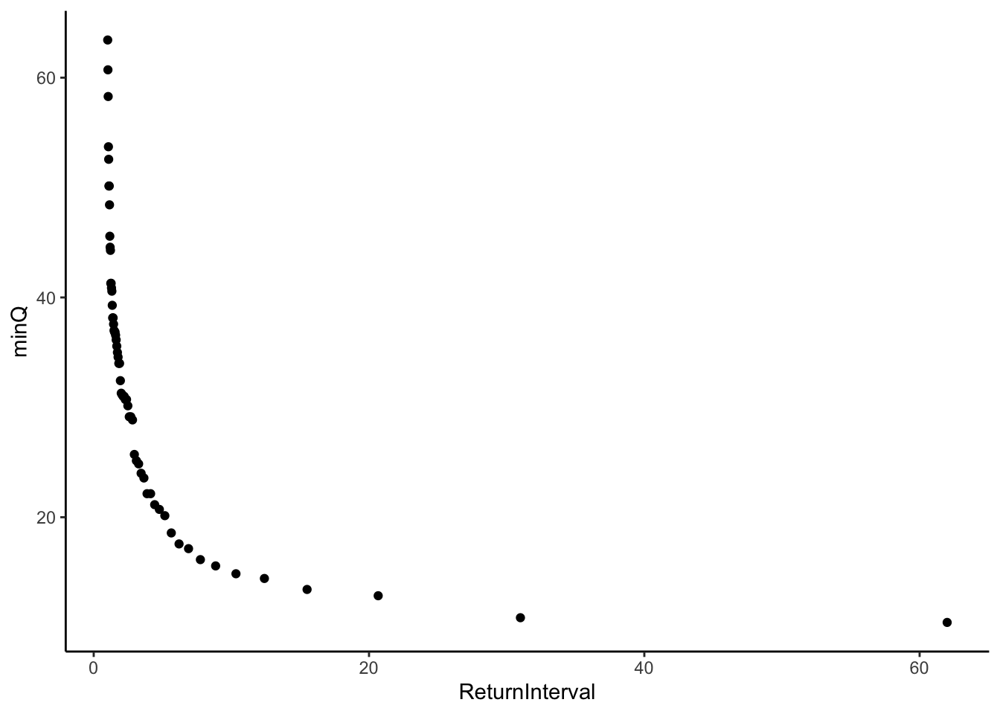
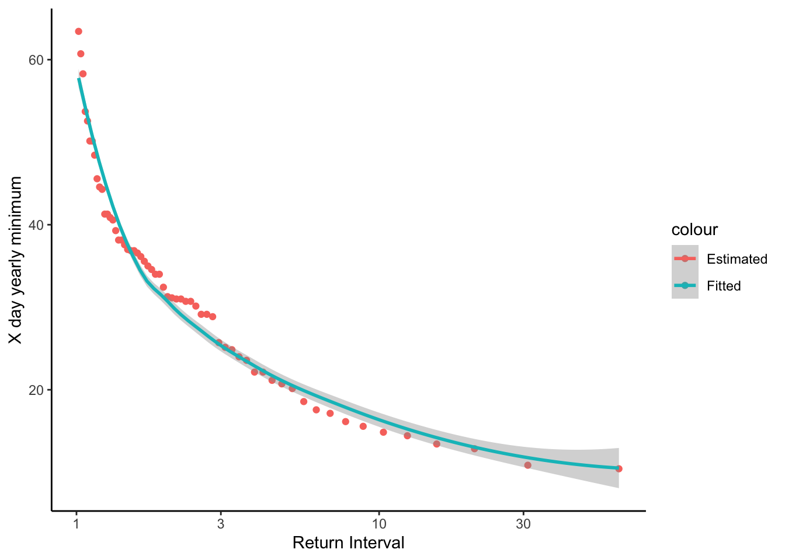

Chapter 12 Low Flow Analyses
12.1 What is a xQy flow?
“The 1Q10 and 7Q10 are both hydrologically based design flows. The 1Q10 is the lowest 1-day average flow that occurs (on average) once every 10 years. The 7Q10 is the lowest 7-day average flow that occurs (on average) once every 10 years.” -EPA https://www.epa.gov/ceam/definition-and-characteristics-low-flows#1Q10
7Q10
Once every 10 years: probability = 0.1 per year 7 day average flow based on daily flow
Download daily data for gage 02138500 Linville NC 1922-1984
siteno <- "02138500"
startDate <- "1922-01-01"
endDate <- "1984-01-01"
parameter <- "00060"
Qdat <- readNWISdv(siteno, parameter, startDate, endDate) %>%
renameNWISColumns()Create X day rolling average for 7 Q 10, 7 day rolling average
Xday <- 7
YrecInt <- 10
Qdat <- Qdat %>% mutate(xdaymean = rollmean(Flow,
Xday,
fill = NA,
na.rm = F,
align = "right"))Calculate lowest mean value (in the moving window) per year add ranks
QyearlyMins <- Qdat %>% mutate(year = year(Date)) %>%
group_by(year) %>%
summarize(minQ = min(xdaymean, na.rm = T),
lenDat = length(Flow),
lenNAs = sum(is.na(xdaymean))) %>%
filter(lenDat > 328 & lenNAs/lenDat < 0.1) #missing less than 10% of each year and 10% or fewer NAs## `summarise()` ungrouping output (override with `.groups` argument)# add rank column and return interval column
QyearlyMins <- QyearlyMins %>%
mutate(rank = rank(minQ, ties.method = "first")) %>%
mutate(ReturnInterval = (length(rank) + 1)/rank) %>%
mutate(ExceedProb = 1/ReturnInterval)
ggplot(QyearlyMins, aes(x = ReturnInterval, y = minQ))+
geom_point()
https://water.usgs.gov/osw/bulletin17b/dl_flow.pdf
Pearson Type III
Flow = exp(Xbar + KS)
where:
Xbar = mean of the log discharge you are investigating
K = frequency factor
S = standard deviation of log discharges
Frequency Factor
\(K = (2 / g) * ((1 +( g * z)) / 6 - ((g ^ 2) / 36)) ^ 3 - 1)\)
Skewness
g = skewness() from moments package
Standard normal variate
z = 4.91 * ((1 / y) ^ 0.14 - (1 - (1 / y)) ^ 0.14)
y = recurrence interval
#Measures of the distribution
Xbar <- mean(log(QyearlyMins$minQ))
S <- sd(log(QyearlyMins$minQ))
g <- skewness(log(QyearlyMins$minQ))
#apply this to the data so we can see how it fits
QyearlyMins <- QyearlyMins %>%
mutate(z = 4.91 * ((1 / ReturnInterval) ^ 0.14 - (1 - 1 / ReturnInterval) ^ 0.14)) %>%
mutate(K = (2 / g) * (((1 + (g * z) / 6 - (g ^ 2) / 36) ^ 3) - 1) ) %>%
mutate(Qfit = exp(Xbar + K * S))
QyearlyMins %>%
ggplot(aes(x = ReturnInterval, y = minQ, color = "Estimated"))+
geom_point()+
geom_smooth(aes(x = ReturnInterval, y = Qfit, color = "Fitted"))+
theme_classic()+
scale_x_log10()+
ylab("X day yearly minimum")+
xlab("Return Interval")## `geom_smooth()` using method = 'loess' and formula 'y ~ x'
Calculate 7Q10 or whatever we want following the xQy format and the values of x and y above
#xQy ei: 7Q10
y = YrecInt
#Find these values based on established relationships
z <- 4.91 * ((1 / y) ^ 0.14 - (1 - 1 / y) ^ 0.14)
K <- (2 / g) * (((1 + (g * z) / 6 - (g ^ 2) / 36) ^ 3) - 1)
PearsonxQy <- exp(Xbar + K * S)Distribution-free method
The expression for xQy is:
xQy = (1-e) X(ml) + eX(m2)
where: [] indicates value is truncated
X(m) = the m-th lowest annual low flow of record
ml = [(n+1)/y]
m2 = [(n+l)/y] + 1
[z] = the largest integer less than or equal to z
e = (n+l)/y - [(n+l)/y]
This method is only appropriate when the desired return period is less than n/5 years
x <- Xday
y <- YrecInt
n <- length(QyearlyMins$minQ)
m1 <- trunc((n + 1)/y)
m2 <- trunc(((n + 1)/y) + 1)
e <- ((n + 1)/y) - m1
Xm1 <- QyearlyMins$minQ[QyearlyMins$rank == m1]
Xm2 <- QyearlyMins$minQ[QyearlyMins$rank == m2]
DFxQy <- (1-e) * Xm1 + e * Xm2